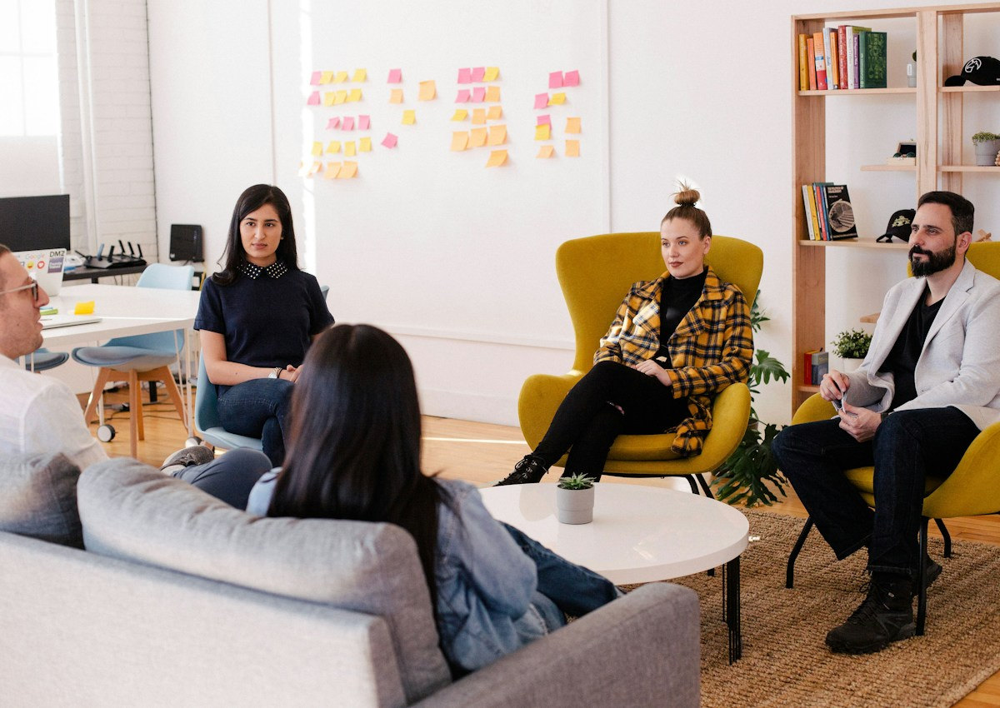

Global Vision
AI-кейс в формате презентационной упаковки: идея продукта, структура аргументов, визуальная логика и digital-подача для деловой аудитории.
Презентация как инструмент объяснения
AI-продукты часто выглядят абстрактно: много технологий, но мало ясности для клиента. Поэтому презентация строится не вокруг функций, а вокруг пользы: какую проблему решаем, почему это важно и как работает продукт.
Data-блок: цифры, графики и аналитика используются как доказательство ценности продукта.
Бизнес-контекст: презентация должна быть понятна не только технической команде, но и ЛПР.
Каждый слайд отвечает на один вопрос
Вместо перегруженных экранов мы используем короткие смысловые блоки. Один слайд — один тезис. Один визуальный акцент — одна задача. Так deck легче читать, презентовать и адаптировать под клиента.
Tech-стиль без холодной перегрузки
Для Global Vision выбран clean-tech подход: светлые интерфейсные фоны, контрастные data-акценты, крупная типографика и визуалы, которые помогают быстро понять механику продукта.
Стратегический слой: продукт объясняется через бизнес-логику, а не только через технологию.

Финальная презентация должна быть удобна для команды продаж, питча и адаптации под разные аудитории.
Что вошло в кейс
Структура deck, смысловая логика, визуальная система, блоки аргументации, продуктовые формулировки, data-визуалы и финальные рекомендации по подаче.
AI-кейс, который можно презентовать
Проект превращает сложную digital-идею в понятный материал для переговоров, питча, сайта и дальнейшего маркетинга.